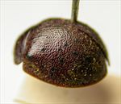
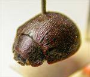
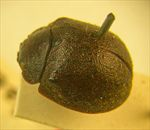
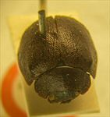
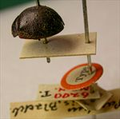
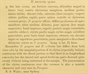

Click on images to enlarge
.jpg){kind=link}

Fig. 1. Paropsis declivis type specimen, lateral view
.jpg){kind=link}

Fig. 2. Paropsis declivis type specimen, oblique view
.jpg){kind=link}

Fig. 3. Paropsis declivis type specimen, dorsal view
.jpg){kind=link}

Fig. 4. Paropsis declivis type specimen, anterior view
.jpg){kind=link}

Fig. 5. Paropsis declivis type specimen with labels
{kind=link}

Fig. 6. Paropsis declivis, description
Name
Paropsis declivis Blackburn, 1896
Corresponds to
This is very likely to be the same species as Ta02, and thus a synonym of T. punctipennis (Blackburn).
Diagnosis and Notes
Blackburn (1896) deals with T. declivis as part of his 'subgroup ii' (i.e., those species without "strongly marked characters", whose greatest height is not or scarcely in front of the middle of the elytral margin and whose elytra are depressed under the humeral callus). Within that group, he characterises it as:
A. Inner edge of humeral callus distinctly nearer to lateral margin of elytra than to suture;
BB. Sides of prothorax not at all explanate;
C. Elytra not having a well defined transverse wheal-like ridge;
DD. Form less wide [than mediocris], elytra not wider than long;
E. Prothorax with somewhat evenly rounded sides; only moderately narrower in front than at base;
FF. Puncturation of elytra exceptionally fine and close;
GG. Submarginal part of elytra not distinct.
This is very likely the same species as Ta02 (and thus P. punctipennis), from the dorsal sculpture of the type, its length and HCE/BL ratio. In his "classification", Blackburn places punctipennis into his subgroup iv, differing from subgroup ii by the greatest height being "considerably in front of the middle of the elytral margin". This characters can be quite variable and is certainly so in Ta02, with some specimens having the greatest height far enough back to be "scarcely" in front of middle of the elytral margin. Certainly, the character that he points to as being "very rare in Paropsis", viz the puncturation on the verrucae, is also present in punctipennis.
Blackburn notes that declivis resembles P. propria and P. cribrata, but lacks the horizontal concavity that separates the disc of the elytra from the margin.
Type specimen
Location: BMNH
Label data: /“Type” (red-bordered circle)/ “6200 N.S.W. T”/ “Blackburn coll. 1910-236.”/ “Paropsis declivis Blackb.”/.
Female; Size: ~8.5 mm long, ~6.8 mm wide (from Blackburn's description); HCE/BL: ~20.5% (obtained by measurement from lateral view in photo).
A dark brown Trachymela, with small, black pustules (most with at least a central puncture) scattered over the elytral surface. Pronotum is strongly, densely and evenly punctured.
Original description
Translation of original description (Figure 6) by ChatGPT, 03/2026:
♀. Fairly broadly ovate; fairly strongly convex, the greatest height (seen from the side) placed about the middle of the elytra; less shining; dark reddish; antennae (except the base), underside of the body, legs, anterior part of the head, scutellum, and the verrucae of the elytra pitchy; allied to P. propria; it differs in that the prothorax is distinctly widened beyond the middle from the apex, behind the apex (this more narrowed) not impressed, the posterior angles more rounded; scutellum somewhat smooth; elytra somewhat more closely and more finely punctulate, behind the base not impressed, with verrucae scarcely raised, black like the punctured surface; marginal area not distinct from the disc; the rest as in P. propria. Length 4 lines [~8.5 mm], width 3⅕ lines [~6.8 mm].
References
Blackburn, T. 1896, "Revision of the genus Paropsis. Part I", Proceedings of the Linnean Society of New South Wales, vol. 21, no. 4, 637-693 (page 671).
Copyright © 2026. All rights reserved.